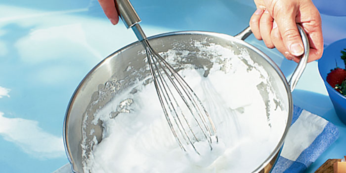

|  | They take up room in the utensil pot and generally do not get used everyday, but everyone needs a few different shaped whisks. Whether you are making bechamel sauce, incorporating air into egg whites or even mashing (yes, really!), you will find yourself reaching for your whisks time and again. |